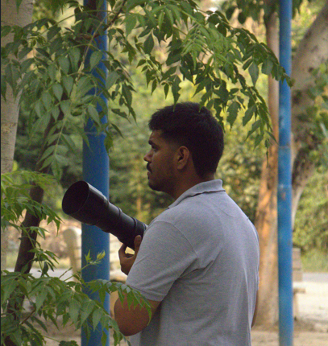
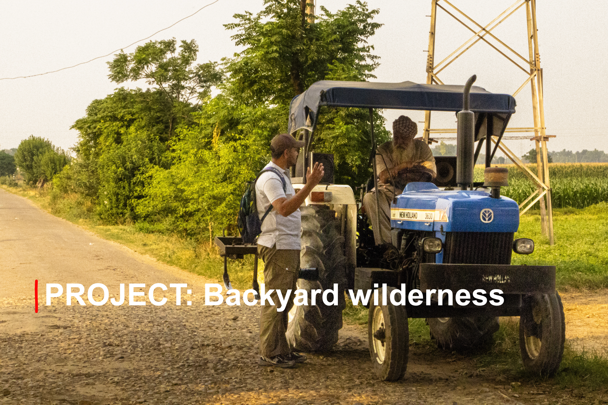
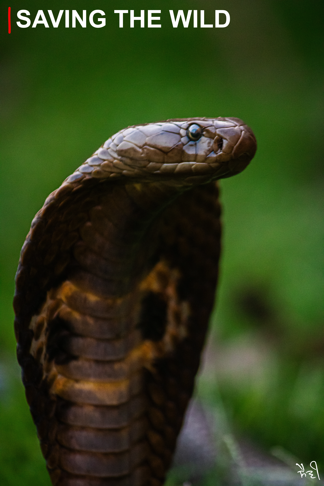
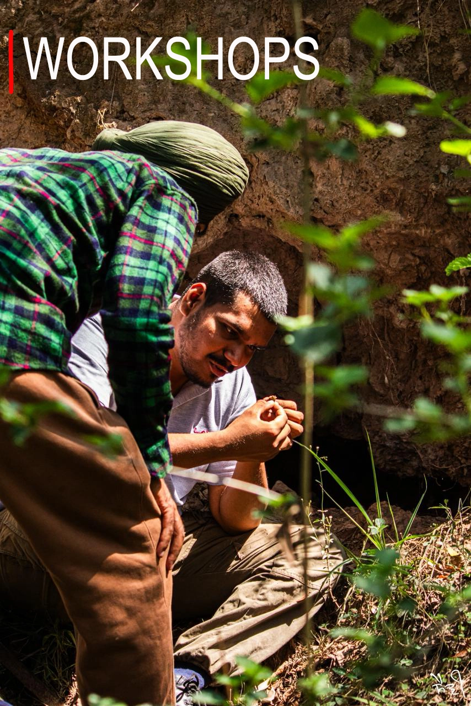

I’m a wildlife photographer, filmmaker, and active rescuer. Whether I’m tracking a split-second frame in the brush or helping in wildlife rescue, my mission is the same: to protect the raw beauty of our natural world and bring you right to its wild heart.


